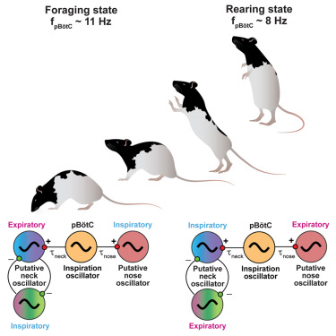
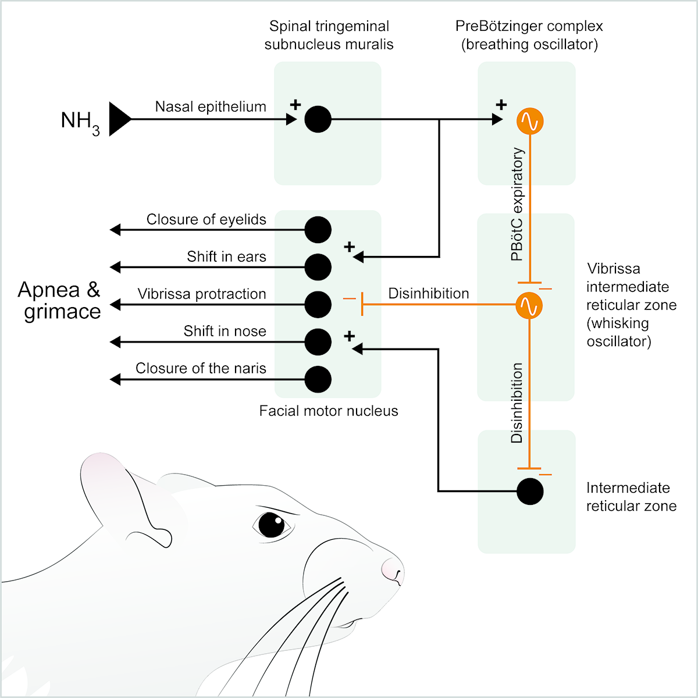

This model provides a computational framework to support longstanding observations of concurrent autonomous and driven rhythmic motor actions and how the interaction of the Central whisking oscillator Breathing oscillator dynamics can be studied using conductance- and rate-based modeling. The github site includes computer programs and scripts for generating figures from the article:
David Golomb, Jeffrey D. Moore, Arash Fassihi, Jun Takatoh, Vincent Prevosto, Fan Wang and David Kleinfeld, Theory of hierarchically-organized neuronal oscillator dynamics that mediate rodent rhythmic whisking.
Neuron, (2022) 110:3833-3851.
Software needed: julia compiler, XMGrace LaTeX
Samuel Andrew Hires, Lorenz Pammer, Karel Svoboda, and David Golomb, Tapered whiskers are required for
active tactile sensation. Elife 2:e01350, 2013.
This is an ode script for XPPAUT that
computes whisker bending in response to contact with object. The calculation is based on the
quasi-static approximation, and conic whisker profile is considered.
General software for control of Basler camera to record animal behavior
Coded by C. Foo. Matlab-based routines to acquire video (1280x1024 frames) at high frame rates (>200Hz)
for hardware-dependent periods; we currently achieve continuous acquisition of 720x720 frames at ~350
Hz.
Coded by Prof. Johnatan Aljadeff and Dr. Benjamin J. Lansdell.
Matlab-based routines for capturing relationships between spiking activities and the external stimuli.
The algorithm extracts features from the input stimulus and predicts the spike rate using different
models (e.g. GLM). The predicted spike rate is then used to generate the spike train by a stochastic
process (e.g. Poisson process).
Three example datasets are included:
(Salamander) Multi-electrode array recording from retinal ganglion cells in response to white noise
visual stimulus (Chichilnisky, 2001; Touryan et al., 2002; Rust et al., 2005; Pillow et al., 2008).
(Rat) Single unit recordings of thalamic neurons, with simultaneous vibrissa motion (Moore et al.,
2015).
(Monkey) Single unit recordings of motor cortex with simultaneous recording of hand position and
grip
strength during joystick manipulation (Engelhard
et al., 2013).
Please contact Prof. Johnatan Aljadeff for questions on the operation of this software. If you use this
software in your research, please reference Aljadeff et al. (Neuron 2016) - ()
Coded by D. N Hill and S. B. Mehta following an initial version coded by M. S. Fee. Matlab-based
routines for the detection and clustering of putative single units from a multi-unit time series, along
with quality metrics. Please contact Dr. Daniel N. Hill for
questions on the operation and maintenance
of this software after consulting the manual.
If you use this software in your research, please reference Hill et al. (J Neurosci 2012) - ()
and Fee et al. (J Neurosci Meth 1997) - () & ()
Coded by D. N. Hill, this makes use of Matlab-based routines for the extraction of amplitude, midpoint,
and phase from a rhythmic signal using Black's technique. Please contact Dr. Daniel N. Hill for
questions on the operation of this software.
If you use this software in your research, please reference Hill et al. (Neuron 2011) - ()
Coded by I. Valmianski and J. D. Driscoll. Matlab-based routines for the automatic identification of
fluorescently labeled brain cells in two-photon scanning microscopy image stacks and the subsequent
calculation of an optimized scan path through these cells. This program makes concurrent use of JBoost.
Please contact Mr. Ilya Valmiansky for questions on the operation
of this software.
If you use this software in your research, please reference Valmianski et al. (J Neurophysiol 2010) -
()
Visualization and annotation tool for brains. Anatomists can view high-resolution tissue stacks and use
the drawing tools to annotate and map the 3D topography of brain regions and the localization of
injections via labelled cells. A groundbreaking automated system, employing cell shape parametric
features and boosted decision trees, and featuring a simplified annotation process, is designed for
premotor neuron detection.
Deepfacetracking is a cross-platform package for automated tracking of a single head, eye, pupil, and rows of whiskers in the high-speed video. The package includes preprocessing and a graphical user interface for experimenters to modify and correct the automatic tracking outcomes.
Rhythmic head and orofacial movements in foraging and rearing

The package contains codes to analyze and visualize the temporal and spectral coordination of orofacial (whisking, pad retraction, nose wiggling) and neck motor actions with respiration in the rat performing naturalistic behaviors (foraging and rearing) in an open arena.
A change in behavioral state switches the pattern of motor output that underlies rhythmic head and orofacial movements. S.-M. Liao and D. Kleinfeld, Current Biology (2023).
A brainstem circuit for the expression of defensive facial reactions in rat

Chemoreceptors in the nasal epithelium can trigger an apneic reaction and a grimace in response to airborne irritants. Callado Perez et al. find that the underlying circuit does not involve olfaction. Rather, activation of neurons in the muralis subnucleus of the spinal trigeminal complex will inhibit the Pre-Bötzinger inhalation oscillator.
Separating cognitive and motor processes in the behaving mouse
The cognitive processes supporting complex animal behavior are closely associated with ubiquitous movements responsible for our posture, facial expressions, ability to actively sample our sensory environments, and other critical processes. These movements are strongly related to neural activity across much of the brain and are often highly correlated with ongoing cognitive processes, making it challenging to dissociate the neural dynamics that support cognitive processes from those supporting related movements.